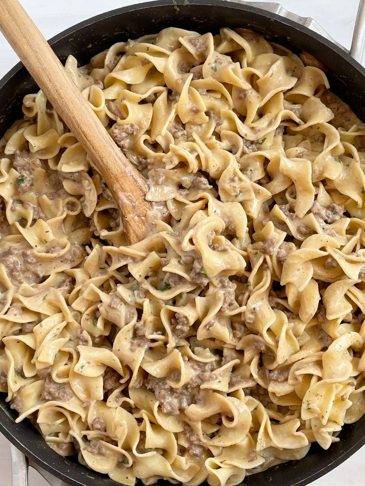

Beef Stroganoff

Description:
Beef Stroganoff is a classic comfort dish that features tender strips of beef, savory mushrooms, and a creamy sauce. This recipe combines these elements to create a flavorful and satisfying meal. Serve it over egg noodles or rice for a hearty dinner.
Ingredients:
- 1 pound (450g) beef sirloin, thinly sliced into strips
- 1 onion, finely chopped
- 2 cloves garlic, minced
- 8 ounces (225g) mushrooms, sliced
- 2 tablespoons butter
- 1 tablespoon olive oil
- 1 cup beef broth
- 1 cup sour cream
- 2 tablespoons all-purpose flour
- 1 teaspoon Dijon mustard
- 1 teaspoon Worcestershire sauce
- Salt and pepper to taste
- Fresh parsley, chopped, for garnish
- 8 ounces (225g) egg noodles or rice, cooked
Steps:
- Heat the olive oil in a large skillet over medium-high heat. Add the beef strips and cook until browned. Remove and set aside.
- In the same skillet, melt the butter. Sauté the chopped onion until translucent.
- Add minced garlic and sliced mushrooms. Cook until mushrooms are browned and any released liquid evaporates.
- Sprinkle flour over mushrooms and stir to combine. Gradually pour in beef broth, stirring constantly. Simmer until the sauce thickens.
- Stir in Dijon mustard and Worcestershire sauce. Season with salt and pepper.
- Reduce heat and return cooked beef to the skillet. Heat through, then remove from heat.
- Gently fold in sour cream, avoiding boiling.
- Serve Stroganoff over cooked egg noodles or rice. Garnish with fresh parsley.